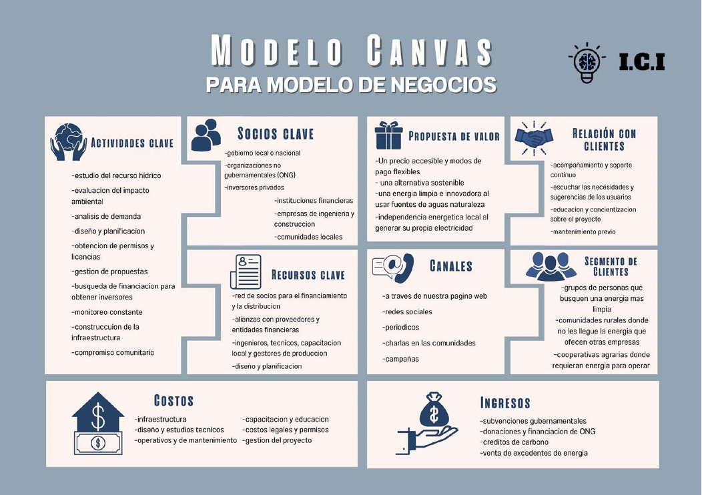

Sin importar tu lugar, estrato, o status economico. I.C.I te trae energia a la puerta de tu casa con
todos los requisitos.
Nuestro contexto
Square Around Text
Andrés es un empresario de 50 años casado y con dos hijos proviene de una familia ganadera y trabaja de manera independiente, actualmente se enfrenta a un problema con altos costos de energía en su propiedad debido a que epm llega muy caro, Andrés posee un terreno y su idea inicial es la instalación de paneles solares pero debido a que en la región donde él se encuentra está nublado no sería una opción muy favorable y además la inversión inicial resulta demasiado alta agregando que Andrés en su propiedad tiene una quebrada y por ello el está buscando alternativa más económica y confiable como una pico central para reducir sus gastos en energía y por eso buscó la ayuda de I.C.I
Square Around Text
el cliente Andrés va tendría una actitud positiva ya que el producto resolvería todas sus necesidades, le contaría a los demás como la pico central de I.C.I ayudó a que pudiera tener energía en su nuevo terreno, una incongruencia entre que dice y lo que siente en realidad es que temía que realmente no fuera a funcionar
Nuestra historia
Square Around Text
I.C.I (Investigacion Creativa Inteligent) nacio a partir de la necesidad de miles de ciudadanos colombianos los cuales no tienen o no tenian acceso a una fuente confiable de energia en sus casas, o no tenian el dinero o tiempo suficiente como para montar una picocentral ofrecida por otras compañias. Por eso estamos aqui para ayudarles, ofreciendo un servicio confiable y sustancial al cliente siempre, cada uno de nuestros trabajadores va a hacer todo lo posible para hacer tus necesidades realidad, es la obligacion que nos pusimos desde el primer dia.
BLOG

En el presente trabajo se describe el procedimiento adelantado, hasta la fecha, por el Grupo interdisciplinar de Estudios Ambientales (GEA), en el desarrollo del proyecto de investigación “Estudio de factibilidad para la implementación de una Pico Central Hidroeléctrica (ρCH) de 1000 w en zonas llanas no interconectadas de Colombia”, el cual está orientado a formular una posible solución a la falta de energía disponible en la zonas de la Orinoquía y la Amazonía colombianas. Se inicia con una breve descripción de la problemática, posteriormente se analiza el recurso hídrico y las condiciones demográficas de la región objeto de estudio; a continuación, se describen algunas características de la denominada generación distribuida (GD), y en ella, las pico centrales hidroeléctricas, que podrían implementarse, considerada como opción válida para la solución del problema; finalmente, la metodología propuesta para adelantar el estudio del impacto ambiental que una obra de estas características genera.